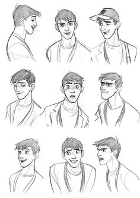

Realism
|
Still life
|
Zentangles/Mandalas
|
Illustration & cartoons
|
Abstract art
|
Pop Art
|
Watercolour
Here's some resources for "Cartoons and illustrations"!

How to draw faces
Udemy- Cartooning course
Musical tracks for creativity
10 artists and what music they listen to
Designer's guide- How to create Illustrations step by step
Digital Illustration inspiration
25 Free Procreate Tutorials for Illustrations, Painting and Drawing
Learn how to make beautiful digital art with these tuturial sets
Digital Painting Lesson 1: the Basics of Using a Graphics Tablet
Ultimate Guide: How to learn Digital Art (with Practical tips)/t
Cartooning basics: Shapes and facs
How to draw a cartoon- for beginners
A youtube channel that teaches tons of cartooning (Cartooning Club how to draw)
Drawingwiffwaffles- An illustrator who you can draw and learn with along with getting some great tips!
Here's some more things that will help you on your learning journey!(click here)